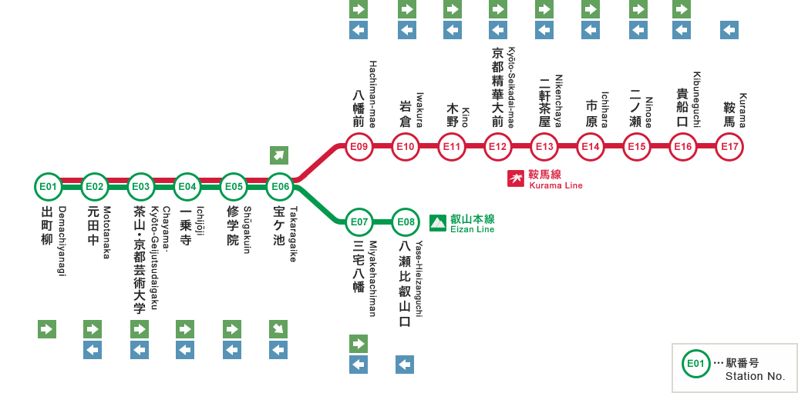
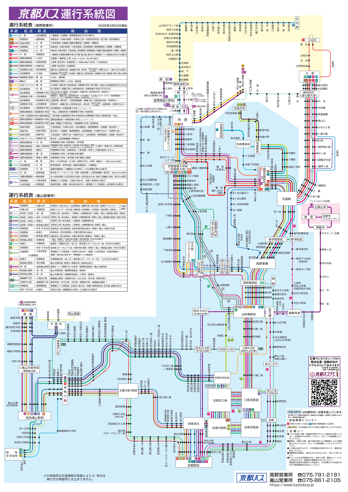
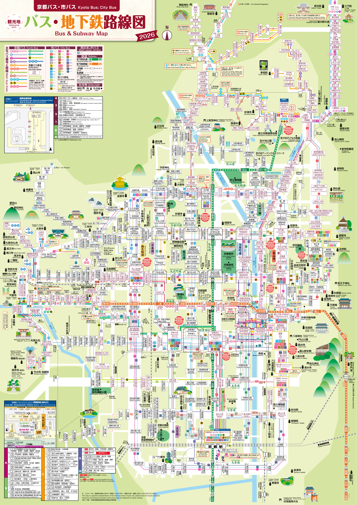

入境＋提領行李抓 45–60 分。出關後先到 2 樓 JR 售票處啟用「JR Kansai WIDE Area Pass」（見交通頁，今天開卡剛好用滿 5 天到 11/29）。
建議先在台灣線上買好 Pass 兌換券飯店就在 JR 京都站八条西口徒步約 1 分，新幹線月台旁、自由通道相連，下車幾乎不用拖行李走遠。先 check in／寄放行李再出門。
飯店早餐 7:00–10:00（有料），明早去天橋立可先吃再出發。
📍 你提供的京都飯店連結錦市場吃吃逛逛（多數店家約 18:00 收），再往河原町、新京極・寺町商店街，動漫購物與 Round1 都在這一帶一次收，不用晚上再回頭。
🧭 順逛順序（由南到北，約 3–10 分腳程）：駿河屋 京都寺町店（近四条・寺町，1F遊戲/2F公仔/3F模型，平日12:00–22:00）→ アニメイト京都（新京極・パッサージオ 2F）→ Round1 京都河原町（近三条・河原町通 4F，9:00–翌6:00）。從四条河原町進、往三条走，Round1 壓軸（開到凌晨，想晚點玩也行）。
（animate／らしんばん另一組在京都站アバンティ 6F，已排在 11/25 抵達或 29。）
錦市場駿河屋寺町animate 新京極Round1 📍 錦市場 📍 駿河屋 寺町店 📍 animate 京都(新京極) 📍 Round1 京都河原町搭當天最早一班特急「はしだて」，約 2 小時到天橋立。持 WIDE Pass 全程免費（含京都丹後鐵道段），建議劃指定席、靠窗。
實際班次請於 JR 官網／車站確認約 2 小時 📍 天橋立駅回到天橋立後上展望台俯瞰沙洲：南側天橋立 View Land（飛龍觀，離車站近）或北側傘松公園（昇龍觀，要先過沙洲）。擇一即可，纜車／吊椅另購票約 ¥1,000 往返。
纜車營業時間（10/1–11/15 為 9:00–17:00，11/16–2/15 為 9:00–16:30），11 月下旬偏早收，記得抓時間。
View Land 飛龍觀傘松公園 📍 View Land白天拜觀 6:00–18:00、拜觀費大人約 ¥500。沿茶碗坂上去，清水舞台＋三重塔＋音羽瀑布。早點到人少又好拍，約 12:00 收，接著往北去貴船。
🍁 下山走去車站時順路：產寧坂→二年坂→八坂塔→八坂神社→祇園一路賞楓好拍，旁邊 高台寺（紅葉名所，例年見頃 11 月中～下旬）可視時間順看，再到京阪「祇園四条」上車（見下路線）。
清水舞台世界遺產約 12:00 收 📍 清水寺清水寺 12:00 結束出發，約 13:45–14:00 到貴船神社，午後光線足、時間剛好。
💳 支付：全程用 ICOCA 最方便（京阪、叡電、京都巴士都能嗶；きらら免預約、一般車資即可）。這些都不在 WIDE Pass 範圍，ICOCA 自動扣款。套票不划算：叡電一日券「えぇきっぷ」¥1,200 只有多跑鞍馬／上下好幾趟才值得，貴船單純來回（約 ¥470×2）用 ICOCA 更省。
💡 回程：貴船下山巴士末班偏早（平日約 17:38）要抓時間；叡電貴船口→出町柳末班約 23:06。實際班次用最上面的 Yahoo 乗換案内＋きらら班表查，別憑印象。
🔗 叡電 きらら 時刻表 🔗 Yahoo 乗換案内 📍 清水五条駅
叡電有兩種観光列車：展望列車「きらら」走鞍馬線（出町柳⇔鞍馬，經「貴船口」與紅葉隧道，你要搭這台）；另一台「ひえい」走叡山本線往八瀬比叡山口（不經貴船）。きらら一般車資即可搭、免預約（自由座），先佔靠窗位。
清水寺 12:00 結束 → 建議搭 出町柳發 12:45 或 13:15 的きらら（約 12:40–12:50 到出町柳）。
| 往鞍馬（下り）出町柳 發 | 過「貴船口」 |
|---|---|
| 12:45 | 13:14 |
| 13:15 | 13:44 |
| 14:00 | 14:29 |
| 14:30 | 14:59 |
| 15:15 | 15:44 |
| 15:45 | 16:14 |
| 回出町柳（上り）「貴船口」發 |
|---|
| 15:52 ／ 16:22 ／ 17:07 ／ 17:47 ／ 18:34 ／ 20:23 … |
紅葉隧道（市原～二ノ瀬）去程、回程都會經過，きらら會減速、夜間關燈慢行。班次可能因車輛檢修臨時變動，出發前再對一次官方 PDF。
🔗 きらら 紅葉季時刻表 PDF 🔗 叡電 時刻表總覽
貴船口→貴船是京都巴士（33／52／特52 等）；這張是京都巴士全系統圖，貴船・鞍馬・大原方向都在右上角。點圖可放大看站名。
回程一樣搭「きらら」，日落後（約 16:50～）經市原～二ノ瀬「紅葉隧道」會關燈、徐行點燈，比白天更夢幻。貴船口上り：15:52／16:22／17:07／17:47／18:34…
⚠️ 貴船→貴船口的京都巴士 33 末班偏早（平日約 17:38）；想待晚一點就改徒步下山（約 30 分）到貴船口站。回到出町柳約 18:00–18:30，可在出町柳一帶或回京都站吃晚餐。
紅葉隧道點燈巴士末班 17:3824 小時開放、免費。千本鳥居一路上稻荷山。因為下午要去嵐山，建議走到「四ツ辻」(約 1–1.5h) 俯瞰市區就折返，不用硬攻山頂（全程 2–3h）。清早光線與人潮最舒服。
千本鳥居免費走到四ツ辻折返 📍 伏見稻荷大社離稻荷只一站（JR 東福寺駅）。通天橋是京都代表級的紅葉名所（見頃 11 月中～下旬，28 號正值見頃、一定有紅葉），但人潮非常多、需購票可能排隊。想保留嵐山時間，這站可快速看或直接略過。
旺季超擠·可略過通天橋 📍 東福寺結論：不用趕。傍晚到晚上班次很密（約每 12–18 分一班，車程 15–19 分），末班約 23:25 左右。就算看完寶嚴院夜間（約到 20:30）再吃晚餐，之後還有很多班，完全來得及。實質「最晚離開」＝末班 ~23:25，但你大概 20:30–21:30 就會走。
傍晚班次抓節奏（分鐘可能微調，當日請用最上方 Yahoo 乗換案内核對，尤其末班）：17:13／17:28／17:46／17:58／18:13／18:28／18:48／18:59／19:13／19:28／19:43／19:58／20:14／20:29／20:49／21:09／21:27／21:46／22:10／…～末班約 23:25。快速班（約 17:40、18:26、19:26）更快到京都。
⚠️ 我查到的 JR 官方每分鐘表改版日較舊（末班時間已不同），所以上面末班以現行版為準、仍請當日再核對一次。
🔗 Yahoo 乗換案内（查當日實際班次）退房後直接逛隔壁的京都アバンティ（八条口正面、購物街 10:00 開）。6 樓一次收：アニメイトアバンティ京都＋らしんばん（指南針，二手周邊）＋カードラボ（卡店），再加館內的 プリサロン（大頭貼）。プリサロン確切樓層到館內導覽／官網確認。逛完回京都站搭車去大阪。
★ 這一棟就在飯店旁，25 抵達當天或 29 出發前哪天順手都行。animate 另一家在河原町新京極（下面 25／27 有排）。
飯店隔壁6F：animate＋らしんばん＋卡店プリサロン 📍 京都アバンティ飯店在御堂筋線「心齋橋站」7 號出口徒步 2 分（四ツ橋站 5 號出口徒步 4 分），check in 15:00、checkout 11:00。放行李後開逛。
📍 你提供的大阪飯店連結大阪的動漫聖地，就在難波南邊、從南海難波駅徒步約 5–6 分，逛完道頓堀／難波順著走下去即可。一帶聚集：
・アニメイト大阪日本橋（日本橋西 1-1-3 アニメイトビル 1・2F，10:00–21:00）
・らしんばん（指南針）就在 animate 附近同一帶
・駿河屋 日本橋でんでんタウン店（日本橋 4-10-1，12:00–21:00）＋駿河屋大阪日本橋本店，可一路 hashigo
11:00 國際線建議 9:00 到。心齋橋→機場約 50 分，最晚 7:30 出發。飯店 checkout 11:00 不影響早出；建議前一晚買好便利商店早餐在路上吃。
時間很緊在南海難波站上車。行李多＋趕時間，建議特急 Rapi:t（全車指定席，約 34–40 分，¥1,490，可先在南海售票機／線上劃位）；想省錢可搭空港急行（約 45 分，¥970，無劃位、旺季可能要站）。約 8:40–8:50 到機場，留 2 小時餘裕。
注意：南海到站為第 1 航廈；若你的班機在第 2 航廈（多為 LCC），下車後要再轉免費接駁巴士約 10 分，請預留時間。
Rapi:t ¥1,490 · 約 34–40 分空港急行 ¥970 · 約 45 分 📍 南海難波駅關西機場國際線第 1 航廈（部分 LCC 在第 2 航廈，需提早搭接駁）。確認你的航班航廈。

全市景點＋市巴士／京都巴士／地下鐵的對照大地圖，找景點到哪一站、哪號巴士很好用。點圖可放大。
| 用到的區段 | 單買約略 | Pass 是否涵蓋 |
|---|---|---|
| 11/25 HARUKA KIX→京都（外國旅客優惠單程） | ¥2,700 | ✅ 免費 |
| 11/26 京都⇆天橋立 特急はしだて（含丹後鐵道）來回 | 約 ¥8,000 | ✅ 免費 |
| 11/28 京都⇆稲荷 JR 奈良線 | 約 ¥300 | ✅ 免費 |
| 11/29 京都→大阪 JR 新快速 | 約 ¥580 | ✅ 免費 |
| 合計（單買） | 約 ¥11,580 | Pass ¥12,000 |
→ 幾乎打平，但 Pass 可無限次搭、彈性高（還能免費加跑宇治、嵐山方向的 JR）。光天橋立那段就值回票價，所以推薦。
| 項目 | 方式／費用 |
|---|---|
| 天橋立 ⇆ 伊根 | 丹後海陸交通巴士（現場付，或買「天橋立·伊根」地區券） |
| 天橋立展望台纜車 | 約 ¥1,000 往返 |
| 京都市區巴士／地下鐵（25、27、28 日） | ICOCA 感應，或視需要買地鐵·巴士一日券 |
| 大阪地下鐵（御堂筋線等） | ICOCA，每趟約 ¥240 |
| 11/30 心齋橋→難波→關西機場（南海電鐵） | 御堂筋線 ¥240＋南海 Rapi:t ¥1,490／空港急行 ¥970 |
若不想綁 5 天連續票，也可單買：HARUKA 外國旅客優惠單程 ¥2,700＋天橋立來回特急票＋其餘單程。總額和 Pass 差不多，但較沒彈性。人多／帶長輩，KIX↔市區也可考慮機場接送包車。
| 項目 | 約略 |
|---|---|
| JR Kansai WIDE Area Pass（5 天） | ¥12,000 |
| 天橋立 伊根巴士＋展望台纜車＋遊覽船 | 約 ¥3,000 |
| 京都市區交通（25／28／29，ICOCA） | 約 ¥1,500 |
| 11/27 貴船（京阪＋叡電きらら＋巴士，ICOCA） | 約 ¥1,500 |
| 大阪地下鐵（29 日） | 約 ¥500 |
| 11/30 難波→KIX（Rapi:t） | ¥1,490 |
| 清水寺拜觀 | ¥500 |
| 東福寺門票（可選） | 約 ¥1,000 |
| 合計（每人） | 約 ¥20,500–21,500 |
票價與日期為查詢時資訊，可能變動；出發前請以官方網站為準。
🍁 11/26 天橋立・伊根丹後紅葉／11/27 叡電「紅葉隧道」徐行點燈（11/7–12/6）＋貴船神社／11/28 東福寺通天橋＋嵐山（見頃命中）。下面是想多看夜楓時的「加碼」名所，全是固定日期點燈、不靠運氣。
27 早上在清水寺，下山走去車站時這幾個就在旁邊；但 27 下午你去貴船，要看「夜間」點燈得取捨（留東山就不去貴船）。日期都是確定的：
所有點燈日期與料金為查詢時（2026-11-19）資訊，各寺社可能微調，出發前請以官方網站為準；旺季夜楓排隊時間長、部分需事先線上預約。
| 店 | 位置 | 最近站 | 時間 | 地圖 |
|---|---|---|---|---|
| アニメイトアバンティ京都 | アバンティ 6F | JR京都站八条口 1–2 分 | 10:00–21:00 | 📍 |
| らしんばん（指南針） | アバンティ 6F | 八条東口 2 分 | 10:00–21:00 | 📍 |
| カードラボ（卡牌） | アバンティ 6F | 八条口 1–2 分 | 依館內 | 📍 |
| プリサロン（大頭貼） | アバンティ 館內（樓層未確認，現場看導覽） | 八条口 1–2 分 | 依館內 | 📍 |
| 店 | 位置 | 最近站 | 時間 | 地圖 |
|---|---|---|---|---|
| アニメイト京都 | 新京極・パッサージオ 2F | 阪急京都河原町駅 | 依店舖 | 📍 |
| 駿河屋 京都寺町店 | 寺町（1F遊戲/2F公仔/3F模型） | 阪急河原町駅 3 分 | 平日 12:00–22:00／假日 10:00–22:00 | 📍 |
| Round1 京都河原町店 | 4F | 阪急京都河原町駅旁 | 9:00–翌 6:00 | 📍 |
| 店 | 位置 | 最近站 | 時間 | 地圖 |
|---|---|---|---|---|
| アニメイト大阪日本橋 | 日本橋西 1-1-3 アニメイトビル 1・2F | 難波 5–6 分 | 10:00–21:00 無休 | 📍 |
| らしんばん（指南針） | オタロード・animate 附近 | 難波 5–6 分 | 依店舖 | 📍 |
| 駿河屋 日本橋でんでんタウン店 | 日本橋 4-10-1（1–3F） | 南海難波 6 分／地下鐵日本橋 8 分 | 12:00–21:00 | 📍 |
| 駿河屋 大阪日本橋本店 | オタロード一帶 | 難波 5–6 分 | 依店舖 | 📍 |
💡 開門時間差：駿河屋多為 12:00 才開、animate 多為 10:00；想一次逛齊建議下午～傍晚去（多數開到 21:00，Round1 到凌晨）。兩家 animate 商品線接近，通常收一家即可，特定限定品再跑第二家。
樓層／營業時間為查詢時（2026-11-19）資訊，可能變動；標「依店舖」者請到場或官網確認。プリサロン 樓層未查到，未臆測。
| 景點 | 最近站／交通 | 支付 |
|---|---|---|
| 錦市場・新京極・寺町（駿河屋／animate／Round1） | 阪急「京都河原町」／地下鐵「四条」，之後徒步 | ICOCA |
| 鴨川・先斗町 | 四条大橋一帶，徒步 | — |
| 東寺／渉成園（夜楓・選配） | 東寺＝近鐵「東寺」或徒步；渉成園＝京都站徒步 | ICOCA／徒步 |
| 景點 | 最近站／交通 | 支付 |
|---|---|---|
| 京都 ⇆ 天橋立 | 特急「はしだて」（JR＋京都丹後鐵道） | ✅ WIDE Pass |
| 天橋立 ⇆ 伊根 | 丹後海陸交通 路線巴士 | 現金／當地票 |
| 展望台（View Land／傘松） | 纜車・吊椅 | 現場購票 |
| 景點 | 最近站／交通 | 支付 |
|---|---|---|
| 清水寺 | 京阪「清水五条」或「祇園四条」徒步 20–25 分 | 京阪＝ICOCA |
| 出町柳 → 貴船口 | 叡電 鞍馬線「きらら」（約 ¥470） | ICOCA（套票不划算） |
| 貴船口 → 貴船神社 | 京都巴士 33「貴船」＋徒步 5 分 | ICOCA |
| 景點 | 最近站／交通 | 支付 |
|---|---|---|
| 伏見稻荷大社 | JR 奈良線「稲荷」下車即到 | ✅ WIDE Pass |
| 東福寺（選配） | JR 奈良線「東福寺」 | ✅ WIDE Pass |
| 嵐山（渡月橋・竹林・天龍寺） | JR 嵯峨野線「嵯峨嵐山」（京都站轉車） | ✅ WIDE Pass |
| 景點 | 最近站／交通 | 支付 |
|---|---|---|
| 京都アバンティ（動漫＋プリサロン） | 京都站八条口，徒步 1 分 | —（徒步） |
| 京都 → 大阪 | JR 新快速（Pass 第 5 天） | ✅ WIDE Pass |
| 大阪（梅田）→ 心齋橋 | 地下鐵 御堂筋線 | ICOCA |
| 心齋橋・道頓堀・日本橋オタロード | 御堂筋線／徒步 | ICOCA／徒步 |
| 段 | 交通 | 支付 |
|---|---|---|
| 心齋橋 → 難波 | 地下鐵 御堂筋線 1 站 | ICOCA |
| 難波 → 關西機場 | 南海 Rapi:t（¥1,490）／空港急行（¥970） | Rapi:t＝乗車券ICOCA＋特急券；空港急行＝ICOCA |
票價／涵蓋為查詢時資訊，可能變動。叡電 5 區間約 ¥470、えぇきっぷ ¥1,200、鞍馬貴船日帰りきっぷ ¥2,100，出發前以官方為準。